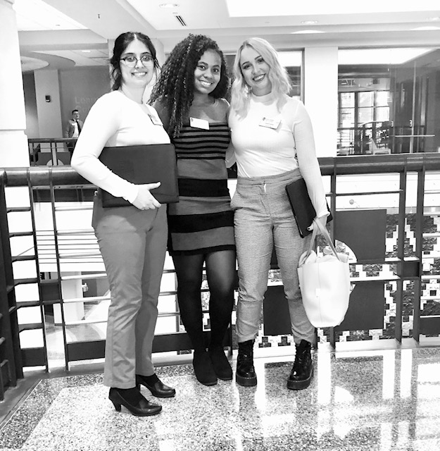

Lauren Taylor Knutson's Professional
Professional Experience

I have always been known to keep myself busy with 40 hours plus a week during my summers since I was 13. Here are all of the positions I have held;
- Student Program Assistant at the UW-Madison Data Science Hub/American Family Insurance
- Product Marketing Intern at Milwaukee Tool
- Fine dining waitress at The Icon
- Waitress at Freddy Valentine's Pub
- House Staff Member at the American Players Theatre
- Young Actress at the American Players Theatre
Feel free to explore my Linkedin for more details per job Lauren's Linkedin